프로젝트
그동안 만든 프로젝트를 모았습니다. 카드를 클릭하면 자세한 설명을 볼 수 있어요.
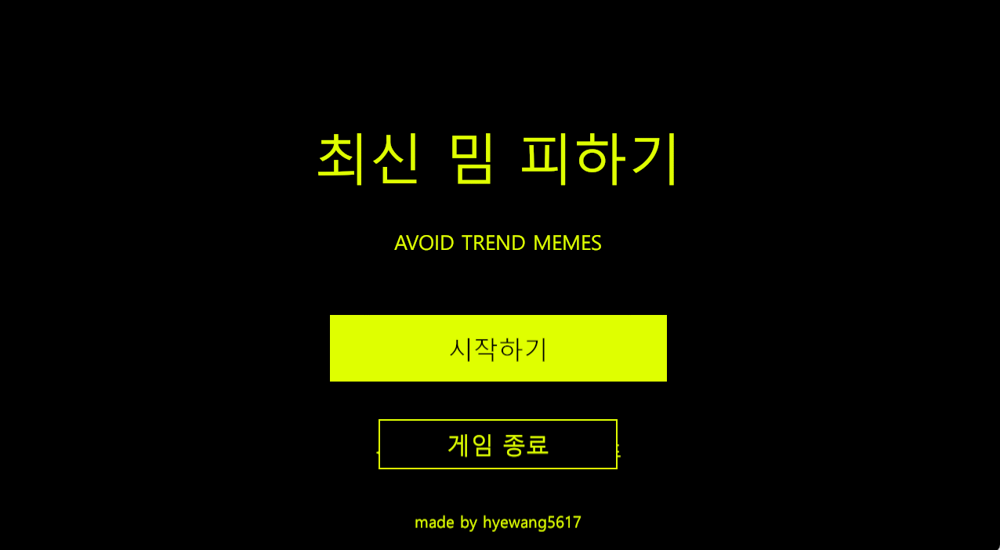
최신 밈 피하기
🏆 2026 플럼잼 1등 · 1인 개발
‘개드립 피하기’를 모티브로 최신 밈과 기믹을 결합한 2D 회피 게임입니다. 기획·개발·아트를 맡아 Unity MCP와 AI Agent를 활용해 제작했고, 최종 평가에서 100점 만점에 90점 이상으로 1등을 수상했습니다.
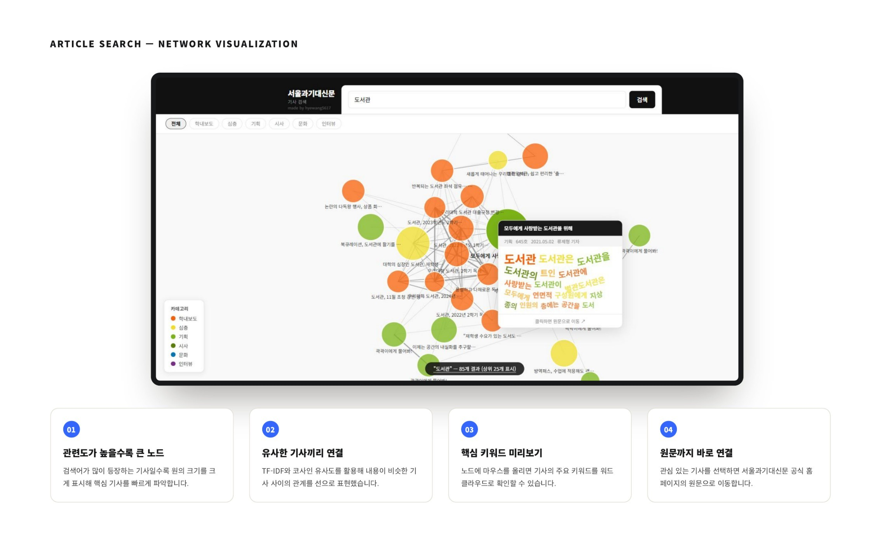
서울과기대신문사 기사찾기
기자가 직접 기획한 기사 검색·탐색 서비스
신문사 활동 중 겪은 검색과 가독성의 불편을 개선하기 위해 제작했습니다. 검색어 관련도와 기사 간 관계를 네트워크 그래프로 보여주고, 핵심 키워드로 내용을 미리 확인할 수 있습니다.
에브리타임 키워드 집계
2026년 4월 · 신문사 기사 취재를 돕는 크롤링 프로그램
담당 기자분의 요청으로 에브리타임 키워드 집계를 자동화했습니다. 집계 결과는 실제 기사에서 ‘시위’ 키워드 언급량의 약 74배 증가를 설명하는 수치 근거로 활용됐습니다.

ph-1
2D 횡스크롤 공포 게임 · 팀 프로젝트
랜턴으로 어두운 맵을 탐색하고 리듬 퍼즐로 몬스터를 처치하는 2D 횡스크롤 공포 게임입니다.
Cooking Papa
웹캠 손동작 인식 쿠킹마마 스타일 게임 · 컴퓨터비전 수업
웹캠으로 손을 인식해 키보드·마우스 없이 손짓만으로 요리하는 쿠킹마마 스타일 게임입니다. OpenCV와 MediaPipe로 손 동작을 추적합니다.
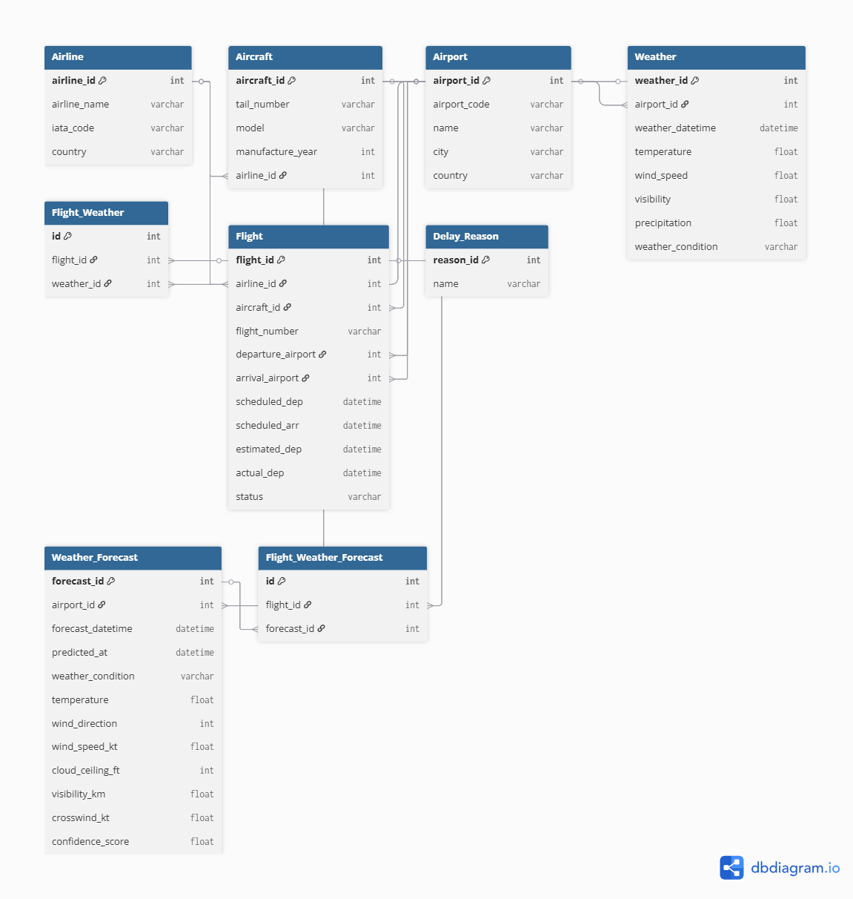
FlightDelayDB
2025년 12월 · 항공편 지연 분석 데이터베이스
항공 지연 요인을 관계형 데이터베이스로 구성하고 SQL로 분석한 2인 팀 프로젝트입니다. 기획과 코드 작성을 담당했으며, 팀원은 영어 논문을 작성했습니다.

Crazy Commuter
미친 통근자 · 팀 프로젝트
차가 달리는 도로를 건너 목표 지점에 도달하는 3D 게임입니다. 더블점프·타임슬로우·제트팩 스킬을 해금·업그레이드할 수 있으며, 4개의 스테이지로 구성됩니다.
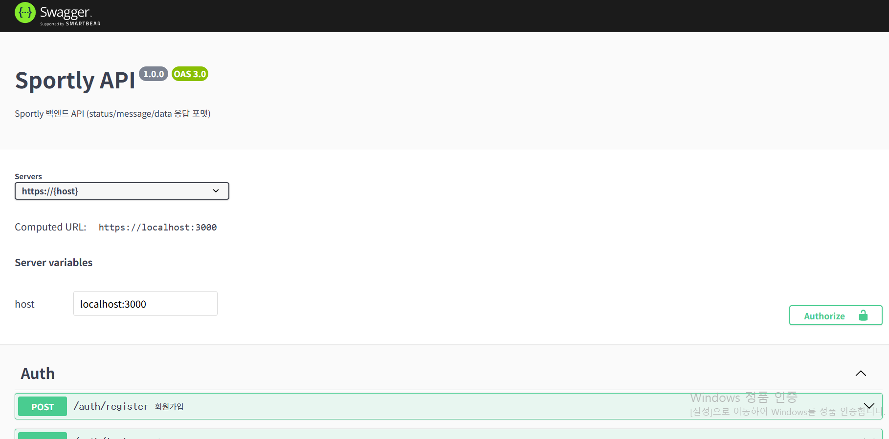
Sportly
축구 팀 매칭 서비스 · Tools Experts 팀 프로젝트
축구 팀의 경기 매칭과 팀 관리를 위한 서비스입니다. 팀장으로 회의와 진행 상황을 정리하고, 인증·알림 등 백엔드 기능 개발과 API 문서화·배포를 담당했습니다.
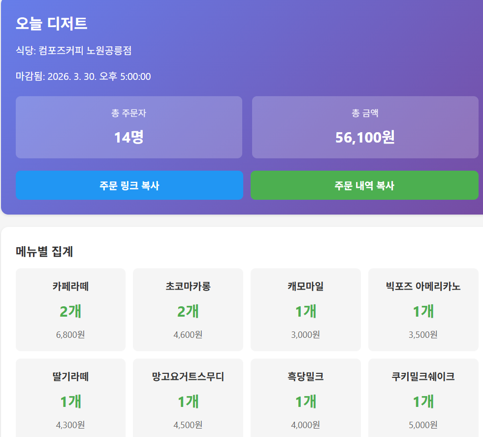
메뉴담기
신문사 총무의 불편에서 시작한 단체 주문 관리 서비스
음식과 디저트 주문을 함께 관리하기 어려웠던 경험을 바탕으로 직접 기획하고, AI와 함께 구현·배포했습니다. 실제 사용 후 모바일에서도 보기 편하도록 개선했습니다.
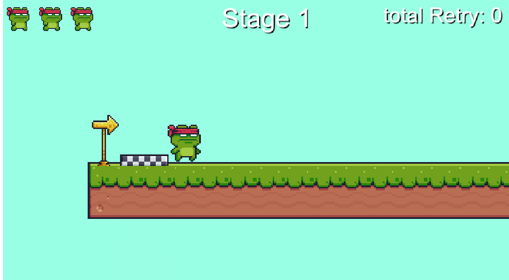
함정 피하기 게임
2D 플랫포머 게임
함정과 장애물을 피해 스테이지를 클리어하는 2D 플랫포머 게임입니다. 더블점프, 트램펄린, 낙하 오브젝트 등 다양한 메커닉이 있습니다.
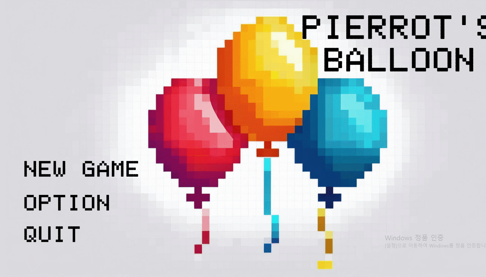
삐에로의 풍선
2D 횡스크롤 공포 게임
서커스 백스테이지에 갇힌 "자두"가 삐에로를 피해 열쇠를 찾고 탈출하는 공포 게임입니다.
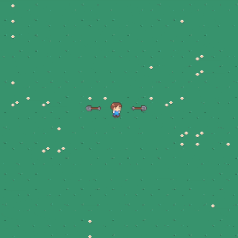
뱀서라이크
Vampire Survivors 류 로그라이크 게임
자동 공격, 몬스터 웨이브, 경험치·레벨업 시스템을 Unity로 구현한 로그라이크 슈터 게임입니다.
내 과일을 받아줘
외주 의뢰 게임 · Processing
외주 의뢰를 받아 Processing으로 제작한 캐주얼 게임입니다. 소쿠리로 과일을 받아내는 5단계 구성으로, Arduino 개발 경험을 살려 완성했습니다.
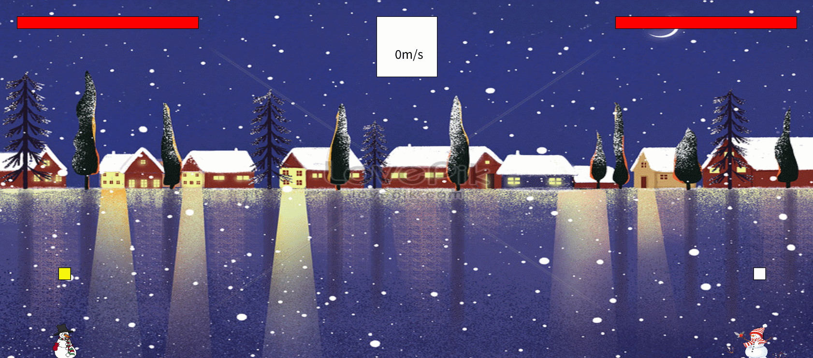
Arrow Master
2인용 궁술 대결 게임
바람 방향과 세기에 따라 화살 궤적이 달라지는 2인용 턴제 대전 게임입니다.

더 인기, 더 팔로워
팔로워 수 맞추기 퀴즈 게임
두 인물의 사진을 보고 팔로워 수를 맞추는 퀴즈 게임입니다.

빛이있으라
꿈창작캠퍼스 게임프로그래밍 과정 · 팀 프로젝트
GameMaker Studio로 9차시에 걸쳐 제작하고 출시까지 완료한 2D 게임입니다.
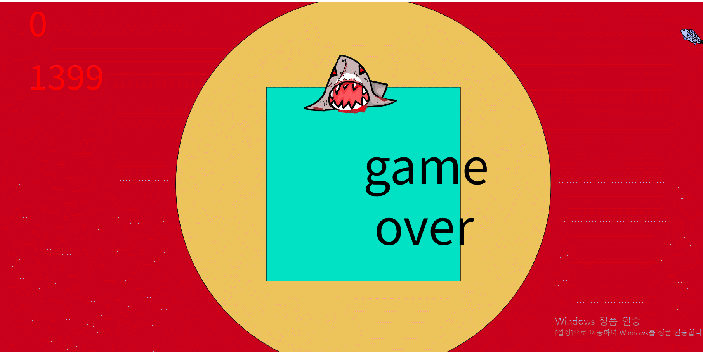
Shark Timer Game
박종혁 & 정혜원 공동 제작
네모난 물 안에 마우스를 최대한 오래 유지하며 상어를 피해 생존하는 게임입니다. p5.js의 마우스 추적 예제에서 아이디어를 얻어 직접 룰을 고안했습니다.
뽥머랭님 팬게임
좋아하는 유튜버를 주제로 만든 탑다운 RPG 팬게임
좋아하는 유튜버 뽥머랭님을 주제로 Unity로 직접 기획하고 제작한 탑다운 RPG 팬게임입니다.
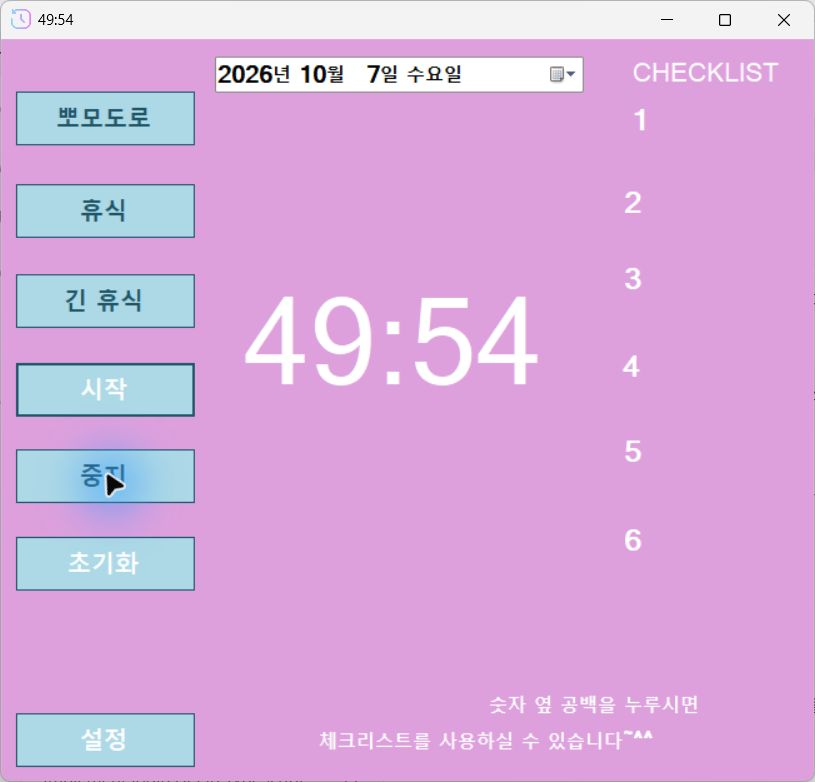
뽀모도로 타이머
2020년 8월 · 집중과 휴식을 관리하는 타이머
집중 시간과 짧은·긴 휴식 시간을 설정하는 Windows 데스크톱 앱입니다. 타이머 조작, 종료 알림과 간단한 체크리스트를 제공합니다.
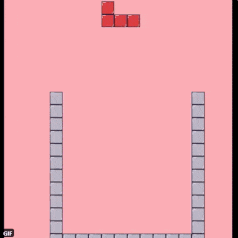
테트리스
학교 온라인 소프트웨어 강의 프로젝트
학교에서 지원하는 온라인 소프트웨어 강의를 수강하며 Unity로 제작한 테트리스 게임입니다.
포도씨의 모험 (2D)
더블점프를 했더니 하드코어가 되었습니다
더블점프 메커니즘을 활용한 하드코어 2D 플랫포머 게임입니다. 캐릭터·코인·장애물 등 모든 도트와 디자인을 직접 제작했습니다.
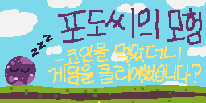
포도씨의 모험 (3D)
코인을 먹었더니 게임을 클리어했습니다?
처음으로 만든 게임입니다. 코인을 수집해 클리어하는 3D 플랫포머로, 캐릭터와 디자인을 직접 제작했습니다.